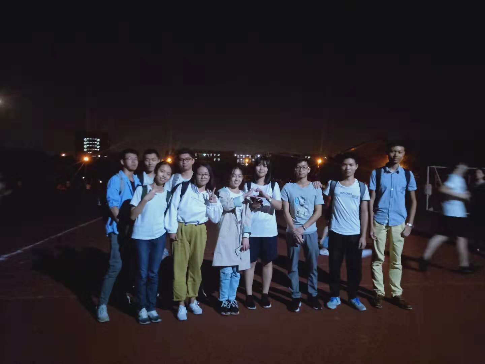
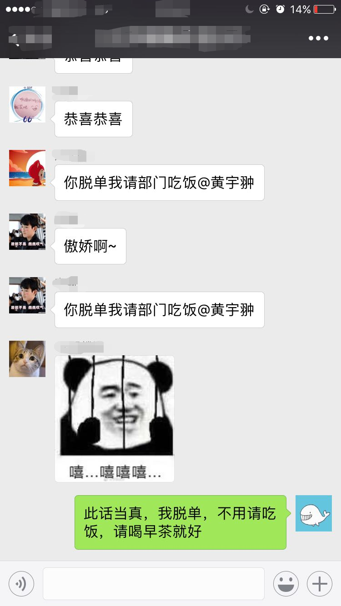

之所以称之为被选择，是因为没有主动选择。好吧，我得承认招新那会我的心是碎的。
很遗憾，招新时候的照片似乎丢了，丢了，真的丢了。。。
拿来凑数。。。
凭栏远眺，尽是红袖招
当初招新实在是太艰难了，把你们拐骗招进来比《操作系统》这门课还难
主动报名的人实在是太少了，所以当我看见“小邓”报名的时候，内心是真的激动啊，那种激动不可言喻
姿势标准
回忆一下面试，你们表现都很好，找不到缺点，唯一的遗憾就是女生太多了。多到我忘记了这应该是一件好事 三场面试，人少之又少，如果没有晚上的那个面试，我真的怀疑，这个部门是要没了。
以后参加活动希望大家能一起去，哪怕只有两个人，但是这也比让一个人去好！
好惨一男的
一个不称职的部长，
我依稀记得很早之前就说过，我要做三件事：
然而我似乎一个都没有做好，所以留下来的问题，就由你们解决了，whatever。
这种找照片的感觉就和我在写简历的时候一样，无经历可写，(っ °Д °;)っ
我没有做好的都已经写在上面了，接下来就是你们的事啦。。。
我真的找不到照片了
感谢留任的爸爸们
部长和副部长是我之前选择的，其实这些并不重要，只是好听而已
我的处事原则是自由散漫，随遇而安。我本来想的是，出于民主考虑，弄一个投票系统，但是时间不够了，不好意思 是我技术太菜。
部长：
郝丽莎副部长：
邓麟峰 李珊 赵晓彤剩下的都是爸爸
以后大家都在北校，希望能好好合作，一起举办活动，招新的时候可能会很痛苦，但是这没有办法，而且之后还有个新校区， 这可是第一次出现这张情况呀。到时候我会替你们加油的。嘿嘿嘿
重点任务
在这个部门待了两年，我真的很感激大家，虽然我平时并不主动和大家联系，但是这可能时性格使然吧。有时候没有回复大家消息， 我也在这里统一道歉 (/▽＼)
或许我们之间并没有多少交集,但是离开了,却让我感觉到了孤单!（好吧，矫情一下, 无事一身轻啊）
以下朋友请不要忘了自己的话，谢谢
